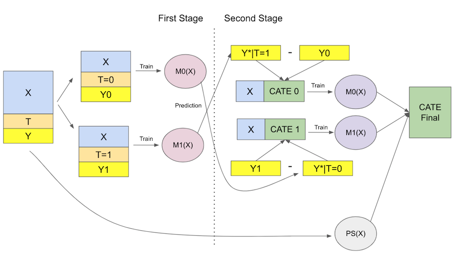

import pandas as pd
import numpy as np
from matplotlib import pyplot as plt
import seaborn as sns
from nb21 import cumulative_gain, elast第二十一章: 元学习器
回顾一下，我们现在有兴趣寻找干预效果的异质性，即确定个体对干预的不同反应。在这个框架中，我们要估计
\[ \tau(x) = E[Y_i(1) − Y_i(0)|X] = E[\tau_i|X] \]
或者，连续的情况下的\(E[\delta Y_i(t)|X]\)。换句话说，我们想知道个体对干预的敏感程度。这在我们无法对所有人进行干预并需要对干预进行优先排序的情况下非常有用，例如，当您想提供折扣但预算有限时。
之前，我们看到了如何转换结果变量 \(Y\)，以便我们可以将其插入预测模型并获得条件平均干预效果 (CATE) 估计。在那里，我们不得不付出方差增加的代价。这是我们在数据科学中经常看到的情况。没有一种最好的方法，因为每种方法都有其缺点和优点。出于这个原因，值得学习许多技术，这样您就可以根据情况权衡取舍。本着这种精神，本章将着重于提供更多工具供您使用。

元学习器是一种利用现成的预测机器学习方法来解决我们迄今为止一直在研究的相同问题的简单方法：估计 CATE。同样，它们都不是最好的，每个都有其弱点。我将尝试复习它们，但请记住，这些内容高度依赖于上下文。不仅如此，元学习器还部署了预测性 ML 模型，这些模型可以从线性回归和提升决策树到神经网络和高斯过程。元学习器的成功也将在很大程度上取决于它使用哪种机器学习方法作为其组件。很多时候你只需要尝试很多不同的东西，看看什么最有效。 ..
在这里，我们将使用与之前相同的数据，重新收集投资广告电子邮件。同样，这里的目标是找出谁会更好地回复电子邮件。不过，这里有点曲折。这一次，我们将使用非随机数据来训练模型和随机数据来验证它们。处理非随机数据是一项更艰巨的任务，因为元学习器需要对数据进行去偏 和 估计 CATE …
test = pd.read_csv("./data/invest_email_rnd.csv")
train = pd.read_csv("./data/invest_email_biased.csv")
train.head()| age | income | insurance | invested | em1 | em2 | em3 | converted | |
|---|---|---|---|---|---|---|---|---|
| 0 | 44.1 | 5483.80 | 6155.29 | 14294.81 | 0 | 0 | 1 | 0 |
| 1 | 39.8 | 2737.92 | 50069.40 | 7468.15 | 1 | 0 | 0 | 0 |
| 2 | 49.0 | 2712.51 | 5707.08 | 5095.65 | 0 | 0 | 1 | 1 |
| 3 | 39.7 | 2326.37 | 15657.97 | 6345.20 | 0 | 0 | 0 | 0 |
| 4 | 35.3 | 2787.26 | 27074.44 | 14114.86 | 1 | 1 | 0 | 0 |
我们的结果变量是转换，我们的处理是 email-1。让我们创建变量来存储这些变量以及我们将用于搜索干预效果异质性的特征 \(X\)。.
y = "converted"
T = "em1"
X = ["age", "income", "insurance", "invested"]S-Learner（又名 Go-Horse Learner）
我们将使用的第一个学习器是 S-Learner。这是我们能想到的最简单的学习器。我们将使用单个（因此是 S）机器学习模型 \(M_s\) 来估计
\[ \mu(x) = E[Y| T, X] \]
为此，我们将简单地将干预作为一个特征包含在模型中，该模型试图预测结果 Y…
from lightgbm import LGBMRegressor
np.random.seed(123)
s_learner = LGBMRegressor(max_depth=3, min_child_samples=30)
s_learner.fit(train[X+[T]], train[y]);然后，我们可以在不同的干预方案下做出预测。测试和控制之间的预测差异将是我们的 CATE 估计
\[ \hat{\tau}(x)_i = M_s(X_i, T=1) - M_s(X_i, T=0) \]
如果我们把它放在图表中，这就是它的样子

现在，让我们看看如何在代码中实现这个学习器。.
s_learner_cate_train = (s_learner.predict(train[X].assign(**{T: 1})) -
s_learner.predict(train[X].assign(**{T: 0})))
s_learner_cate_test = test.assign(
cate=(s_learner.predict(test[X].assign(**{T: 1})) - # predict under treatment
s_learner.predict(test[X].assign(**{T: 0}))) # predict under control
)为了评估这个模型，我们将查看测试集中的累积增益曲线。我也在绘制火车的增益曲线。由于训练是有偏差的，这条曲线不能给出模型是否良好的任何指示，但它可以指出我们是否过度拟合训练集。发生这种情况时，火车集中的曲线将非常高。如果您想看看它是什么样子，请尝试将 max_depth 参数从 3 替换为 20…
gain_curve_test = cumulative_gain(s_learner_cate_test, "cate", y="converted", t="em1")
gain_curve_train = cumulative_gain(train.assign(cate=s_learner_cate_train), "cate", y="converted", t="em1")
plt.plot(gain_curve_test, color="C0", label="Test")
plt.plot(gain_curve_train, color="C1", label="Train")
plt.plot([0, 100], [0, elast(test, "converted", "em1")], linestyle="--", color="black", label="Baseline")
plt.legend()
plt.title("S-Learner");
正如我们从累积增益中看到的那样，S-learner 虽然简单，但可以在此数据集上执行良好。要记住的一件事是，这种性能对于这个数据集来说是非常特殊的。根据您拥有的数据类型，S-learner 可能做得更好或更差。在实践中，我发现 S-learner 是解决任何因果关系问题的首选，主要是因为它的简单性。不仅如此，S-learner 可以处理连续处理和离散处理，而本章中的其他学习器只能处理离散处理。
S-learner 的主要缺点是它倾向于使干预效果偏向于零。由于 S-learner 使用的通常是正则化机器学习模型，因此正则化会限制估计的干预效果。 Chernozhukov 等人 (2016) 使用模拟数据概述了这个问题：

在这里，他们使用 S-learner 绘制了真实因果效应（红色轮廓）与估计因果效应 \(\tau - \hat{\tau}\) 之间的差异。估计的因果效应严重向下偏倚（\(\tau - \hat{\tau} > 0\) 大多数时候）。换句话说，真实的因果效应往往大于估计的因果效应。
更糟糕的是，如果相对于其他协变量在解释结果时所起的影响而言，干预的效果非常弱，则 S-learner 可以完全丢弃干预变量。请注意，这与您选择的 ML 模型高度相关。正则化越大，问题就越大。解决这个问题的尝试是我们将看到的下一个学习器…
T-学习器
T-learner 试图通过强制学习器首先对其进行拆分来解决完全丢弃处理的问题。我们将为每个干预变量使用一个模型，而不是使用单个模型。在二元情况下，我们只需要估计两个模型（因此得名 T）：
\[ \mu_0(x) = E[Y| T=0, X] \]
\[ \mu_1(x) = E[Y| T=1, X] \]
然后，在预测时，我们可以对每个处理进行反事实预测，并得到 CATE，如下所示。
\[ \hat{\tau}(x)_i = M_1(X_i) - M_0(X_i) \]
这是这个学习器的图表

现在，关于理论已经足够了。让我们编写代码…
np.random.seed(123)
m0 = LGBMRegressor(max_depth=2, min_child_samples=60)
m1 = LGBMRegressor(max_depth=2, min_child_samples=60)
m0.fit(train.query(f"{T}==0")[X], train.query(f"{T}==0")[y])
m1.fit(train.query(f"{T}==1")[X], train.query(f"{T}==1")[y])
# estimate the CATE
t_learner_cate_train = m1.predict(train[X]) - m0.predict(train[X])
t_learner_cate_test = test.assign(cate=m1.predict(test[X]) - m0.predict(test[X]))gain_curve_test = cumulative_gain(t_learner_cate_test, "cate", y="converted", t="em1")
gain_curve_train = cumulative_gain(train.assign(cate=t_learner_cate_train), "cate", y="converted", t="em1")
plt.plot(gain_curve_test, color="C0", label="Test")
plt.plot(gain_curve_train, color="C1", label="Train")
plt.plot([0, 100], [0, elast(test, "converted", "em1")], linestyle="--", color="black", label="Baseline")
plt.legend();
plt.title("T-Learner");
T-learner 在此数据集上也表现良好。测试性能看起来与我们使用 S-learner 获得的结果没有太大区别。或许是因为干预没有那么弱吧。此外，我们可以看到训练性能远高于测试性能。这表明模型过度拟合。之所以会发生这种情况，是因为我们只在数据的一个子集上拟合每个模型。使用较少的数据点，模型可能会学习一些噪音。
T-Learner 避免了不接受弱干预变量的问题，但它仍然会受到正则化偏差的影响。考虑以下情况，取自 Kunzela 等人，2019 年。您有大量未经干预的数据，而干预过的数据很少，这在许多应用程序中都是很常见的情况，因为干预通常很昂贵。现在假设你在结果 Y 中有一些非线性，但干预效果是恒定的。我们可以在下图中看到发生了什么

在这里，由于我们干预过的观测值很少，\(M_1\) 将是一个非常简单的模型（在本例中为线性模型）以避免过度拟合。 \(M_0\) 会更复杂，但没关系，因为丰富的数据可以防止过度拟合。从机器学习的角度来看，这都是合理的。但是，如果我们使用这些模型来计算类别 \(\hat{\tau}=M_1(X) - M_0(X)\)，\(M_1(X)\) 的线性减去 \(M_0(X)\) 的非线性将导致非线性 CATE（蓝线减去红线），这是错误的，因为在这种情况下 CATE 是常数且等于 1。
这里发生的是未干预数据对应的模型可以拾取非线性，但干预数据对应的模型不能，因为我们使用正则化来处理小样本。当然，您可以在该模型上使用较少的正则化，但样本量太小会导致过度拟合。似乎我们进退两难。为了解决这个问题，我们可以使用 Kunzela 等人在同一篇论文中提出的 X-learner。.
X-学习器
X-learner 比之前的 learner 解释起来要复杂得多，但它的实现非常简单，所以不用担心。 X-Learner 有两个阶段和一个倾向评分模型。第一个与 T-learner 相同。首先，我们将样本分成处理过的和未处理过的，并为处理过的和对照拟合一个 ML 模型。
\[ \hat{M}_0(X) \approx E[Y| T=0, X] \]
\[ \hat{M}_1(X) \approx E[Y| T=1, X] \]
现在，事情开始有了转机。对于第二阶段，我们使用上述模型输入控制和干预的效果
\[ \hat{\tau}(X, T=0) = \hat{M}_1(X, T=0) - Y_{T=0} \]
\[ \hat{\tau}(X, T=1) = Y_{T=1} - \hat{M}_0(X, T=1) \]
然后，我们再拟合两个模型来预测这些影响
\[ \hat{M}_{\tau 0}(X) \approx E[\hat{\tau}(X)|T=0] \]
\[ \hat{M}_{\tau 1}(X) \approx E[\hat{\tau}(X)|T=1] \]
如果我们将它应用到我们之前展示的图像上，\(\hat{\tau}(X, T=0)\)，即对未处理的估算处理效果，将是红色十字，红色虚线将是 $ _{}(X)$。注意这个模型是错误的。因为 \(\hat{\tau}(X, T=0)\) 是使用正则化的简单模型制作的，在经过处理的 \(\hat{M}_1\) 上进行估计。它输入的处理效果是非线性的，因为它没有捕获 Y 变量中的非线性。
相比之下，蓝点是被干预对象的估计干预结果，\(\hat{\tau}(X, T=1)\)。这些影响是使用正确的模型 \(M_0\) 估计的，该模型在未经处理的大样本中训练。因此，由于其估计的干预效果是正确的，我们能够训练出正确的第二阶段模型 \(\hat{M}_{\tau 1}(X)\)，如蓝线所示。

所以我们有一个错误的模型，因为我们错误地输入了干预效果，而另一个模型是正确的，因为我们正确地估算了这些值。现在，我们需要一种方法将两者结合起来，从而为正确的模型赋予更多权重。.这就是倾向得分模型发挥作用的地方让 \(\hat{e}(x)\) 成为倾向得分模型，我们可以将两个第二阶段模型组合如下：
\[ \hat{\tau(x)} = \hat{M}_{\tau 0}(X)(\hat{e}(x)) + \hat{M}_{\tau 1}(X)( 1-\hat{e}(x)) \]
由于处理单元很少，\(\hat{e}(x)\) 非常小。这会给错误的模型 \(\hat{M}_{\tau 0}(X)\) 一个非常小的权重。
相比之下，\(1-\hat{e}(x)\) 接近于 1，因此我们会给正确的模型 \(\hat{M}_{\tau 1}(X)\) 赋予较高的权重。更广义的情况下，使用倾向得分的加权平均数将确保我们为估计更有可能得到进行干预的 CATE 模型赋予更多权重。换句话说，我们会偏爱使用更多数据训练的模型。下图显示了 X-learner 和 T-learner 给出的估计 CATE。

正如我们所看到的，与 T-learner 相比，X-learner 在纠正非线性估计的错误 CATE 方面做得更好。一般来说，当一个干预组比另一个大得多时，X-learner 表现更好。
我知道这可能有点啰嗦，但希望一旦我们开始实施，它就会变得清晰。为了总结一切，这里是这个学习器的图表。

最后到代码！首先，我们有第一阶段，它与 T-Learner 完全相同。 ..
from sklearn.linear_model import LogisticRegression
np.random.seed(123)
# first stage models
m0 = LGBMRegressor(max_depth=2, min_child_samples=30)
m1 = LGBMRegressor(max_depth=2, min_child_samples=30)
# propensity score model
g = LogisticRegression(solver="lbfgs", penalty='none')
m0.fit(train.query(f"{T}==0")[X], train.query(f"{T}==0")[y])
m1.fit(train.query(f"{T}==1")[X], train.query(f"{T}==1")[y])
g.fit(train[X], train[T]);现在，我们估算干预效果并在其上拟合第二阶段模型。 ..
d_train = np.where(train[T]==0,
m1.predict(train[X]) - train[y],
train[y] - m0.predict(train[X]))
# second stage
mx0 = LGBMRegressor(max_depth=2, min_child_samples=30)
mx1 = LGBMRegressor(max_depth=2, min_child_samples=30)
mx0.fit(train.query(f"{T}==0")[X], d_train[train[T]==0])
mx1.fit(train.query(f"{T}==1")[X], d_train[train[T]==1]);最后，我们使用倾向评分模型进行修正预测。 ..
def ps_predict(df, t):
return g.predict_proba(df[X])[:, t]
x_cate_train = (ps_predict(train,0)*mx0.predict(train[X]) +
ps_predict(train,1)*mx1.predict(train[X]))
x_cate_test = test.assign(cate=(ps_predict(test,0)*mx0.predict(test[X]) +
ps_predict(test,1)*mx1.predict(test[X])))让我们看看我们的 X-Learner 在测试中的表现如何。我们再次绘制累积增益曲线。 ..
gain_curve_test = cumulative_gain(x_cate_test, "cate", y="converted", t="em1")
gain_curve_train = cumulative_gain(train.assign(cate=x_cate_train), "cate", y="converted", t="em1")
plt.plot(gain_curve_test, color="C0", label="Test")
plt.plot(gain_curve_train, color="C1", label="Train")
plt.plot([0, 100], [0, elast(test, "converted", "em1")], linestyle="--", color="black", label="Baseline")
plt.legend();
plt.title("X-Learner");
我们在这个数据集上的表现仍然是还不错的。S、T 和 X 学习器在这里的表现似乎非常相似。不过，我认为了解所有这些元学习器还是值得的，这样你就可以使用最适合你的东西。请记住，性能也高度依赖于我们选择的基础机器学习模型。在这里，我们使用 Gradient Boosted Trees 完成了所有工作，但也许其他方法甚至具有不同超参数的相同方法可能效果更好。
关键思想
同样，我们能做的最简单的事情就是使用单个或 S-learner，并将处理作为一个特征。当干预不是结果的弱预测指标时，这往往很有效。但如果情况并非如此，S-learner 往往会偏向于零，甚至完全放弃干预。增加一点复杂性，我们可以使用 T-learner 强制学习器接受干预。在这里，我们为每个干预的水平设置一个机器学习模型。当所有干预水平都有足够的样本时，此方法工作正常，但当一个干预水平的样本量较小时，它可能会失败，从而迫使模型被高度正则化。为了解决这个问题，我们可以使用 X-learner 增加另一层复杂性，其中我们有两个拟合阶段，我们使用倾向得分模型来纠正用很少的数据点估计的模型的潜在错误。
这些学习器（S-学习器除外）的一个大问题是他们假设二元或分类处理。还有一种我们还没有见过的更通用的学习器：R 学习器。但别担心，我们将有一整章专门介绍它。